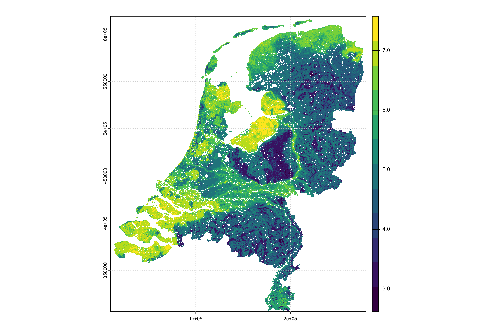
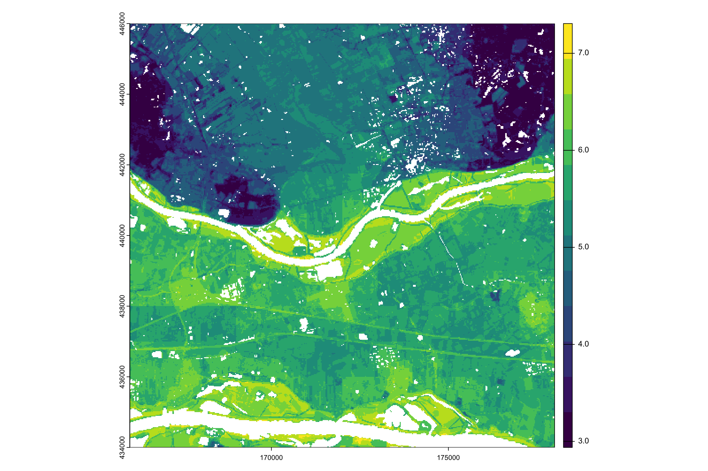
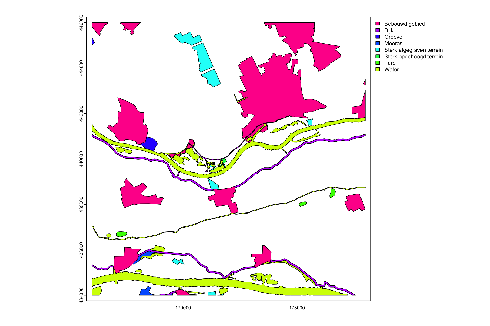

![]()
require(terra)
require(sf)BIS-4D maps
Helfenstein, A., Mulder, V. L., Hack-ten Broeke, M. J. D., van Doorn, M., Teuling, K., Walvoort, D. J. J., & Heuvelink, G. B. M. (2024). BIS-4D: Maps of soil properties and their uncertainties at 25 m resolution in the Netherlands (Versie 2) [GeoTIFF (.tif)]. [object Object]. https://doi.org/10.4121/0C934AC6-2E95-4422-8360-D3A802766C71
“[This dataset] contains maps of soil properties and their uncertainties at 25m resolution in the Netherlands obtained using the BIS-4D soil modelling and mapping platform.”
“This dataset includes maps of predictions of the mean, 0.05, 0.50 (median) and 0.95 quantiles and the 90th prediction interval width (PI90) of clay content [%], silt content [%], sand content [%], bulk density (BD) [g/cm3], soil organic matter (SOM) [%], pH [KCl], total N (Ntot) [mg/kg], oxalate-extractable P (Pox) [mmol/kg] and cation exchange capacity (CEC) [mmol(c)/kg]. Prediction maps are available for the standard depth layers specified by the GlobalSoilMap initiative (0-5, 5-15, 15-30, 30-60, 60-100 and 100-200cm). For SOM, these prediction maps are available for the years 1953, 1960, 1970, 1980, 1990, 2000, 2010, 2020 and 2023 based on changing land use, peat classes and peat occurrence over time.”
File naming structure: “[soil property]d[upper depth layer boundary][lower depth layer boundary]QRF[PI90/pred type][processed].tif”
Example: “clay_per_d_0_5_QRF_pred_mean_processed.tif”
Soil property denotes the target soil property (listed above), depth upper and lower boundaries indicate the prediction target depth, QRF = quantile regression forest, which is the algorithm used for model calibration and prediction, PI90 is a measure of prediction uncertainy and is the 95th - 5th quantile, “pred_mean” indicates mean predictions, “pred50” indicates median predictions, “pred5” indicates 5th quantile prediction and “pred95” indicates 95th quantile prediction. … For SOM, the target prediction year is also indicated directly after “SOM_per”, e.g. “SOM_per_2023_d_0_5_QRF_pred_mean.tif”.
Download the compressed file from the website at the above URL for the property of interest, unpack it, and find the coverage of interest (depth and quantile).
For example, mean prediction of pH at the surface 0-5 cm layer.
1 Load required packages.
2 Set up the directory for the input and output files.
This is on my system, change to wherever you want to store the sample files. Note that in Unix-alike systems the ~ symbol refers to the user’s home directory.
file.dir <- path.expand("~/tmp/BIS-4D/pH/")3 Load the file.
file.name <- "pH_KCl_d_0_5_QRF_pred_mean"
file.ext <- ".tif"
r <- rast(paste0(file.dir, file.name, file.ext))
st_crs(r)$proj4string[1] "+proj=sterea +lat_0=52.1561605555556 +lon_0=5.38763888888889 +k=0.9999079 +x_0=155000 +y_0=463000 +ellps=bessel +units=m +no_defs"st_bbox(r) xmin ymin xmax ymax
10000 306250 280000 618750 ext(r)SpatExtent : 10000, 280000, 306250, 618750 (xmin, xmax, ymin, ymax)res(r)[1] 25 25dim(r)[1] 12500 10800 1summary(r) pH_KCl_d_0_5_QRF_pred_mean
Min. :2.62
1st Qu.:4.49
Median :4.97
Mean :5.21
3rd Qu.:6.11
Max. :7.51
NA's :60705 The coördinates are the Dutch national grid. Resolution is 25, 25 meters in this system. The entire European territory of the country is covered. There are over 10k cells in the two axes. Notice that terra does not load the entire map into memory, just what it needs for each operation.
Show the map. Use an appropriate colour scheme. For pH this can approximate litmus paper: blue for acid, yellow for alkaline. Again, terra optimizes by showing a reduced-resolution map.
plot(r, col=viridis::viridis_pal()(12))
grid()
4 Crop to a test area
To evaluate patterns we choose a 12 x 12 km sample area with good contrast.
r.c <- rast()
ext(r.c) <- c(166000, 178000, 434000, 446000)
r.c <- crop(r, ext(r.c))
ext(r.c)SpatExtent : 166000, 178000, 434000, 446000 (xmin, xmax, ymin, ymax)summary(r.c) pH_KCl_d_0_5_QRF_pred_mean
Min. :2.937
1st Qu.:4.837
Median :5.501
Mean :5.285
3rd Qu.:5.893
Max. :7.307
NA's :9499 dim(r.c)[1] 480 480 1plot(r.c, col=viridis::viridis_pal()(12))
We see some sharp borders, some field patterns of various patch sizes, and some homogeneous areas. There are patches of different shapes as well as (semi-)linear features. The two rivers are the Nederrijn and the Waal
5 Save the map for pattern analysis.
f.name.c <- paste0(file.dir, file.name,
"_", ext(r.c)[1],
"-", ext(r.c)[2],
"_", ext(r.c)[3],
"_", ext(r.c)[4],
file.ext)
writeRaster(r.c, f.name.c,
overwrite = TRUE)
file.size(f.name.c)/1024^2[1] 0.8325386This test area’s file size is 0.833 Gb.
6 Compare with soil map 1:50k
The spatial patterns at a coarser scale can be compared to the 1:50k soil map; this has a mimumum mappable area of 6.25 ha, e.g., 250 x 250 m, which is 10x coarser in each dimension than BIS-4D.
https://service.pdok.nl/bzk/bro-bodemkaart/atom/bro-bodemkaart.xml
This can be downloaded as a Geopackage (141.7 Mb!).
file.name.ext <- "BRO_DownloadBodemkaart.gpkg"
v <- vect(paste0(file.dir, file.name.ext))
ext(v)SpatExtent : 14436.9962000065, 277438.000000015, 307401.250000004, 619021.437400002 (xmin, xmax, ymin, ymax)summary(v) maparea_id maparea_collection beginlifespan endlifespan
Length:5882 Length:5882 Length:5882 Length:5882
Class :character Class :character Class :character Class :character
Mode :character Mode :character Mode :character Mode :character
pedologicalinterest
Length:5882
Class :character
Mode :character v.c <- crop(v, r.c)
# unique(v.c$maparea_id)
unique(v.c$maparea_collection)[1] "Actualisatie met AHN3 2020"
[2] "Eerste opname met uitgebreide veldverkenning"
[3] "Actualisatie met uitgebreide veldverkenning 2020"unique(v.c$pedologicalinterest)[1] "Sterk afgegraven terrein" "Groeve"
[3] "Moeras" "Water"
[5] "Terp" "Bebouwd gebied"
[7] "Dijk" "Sterk opgehoogd terrein" plot(v.c, "pedologicalinterest")
Not much help here. But we keep this code for reference.
Reuse
CC-BY